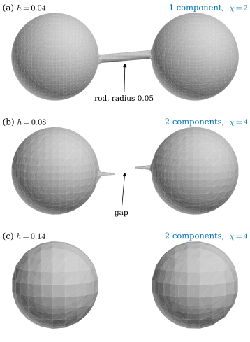
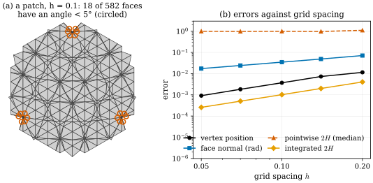
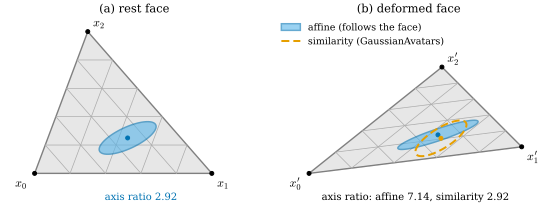
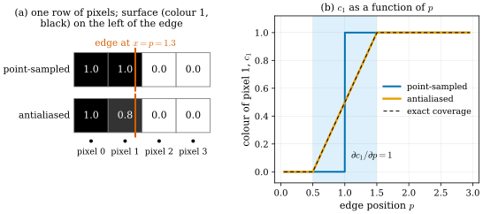

31.5 From Fields to Meshes and Back
Goals
- level set에서 꺼낸 mesh가 무엇을 보장하고(manifold, 닫힘, 일관된 orientation) 무엇을 보장하지 않는지(grid보다 가는 구조, 가는 삼각형, 점마다의 curvature) 설명할 수 있다.
- Poisson reconstruction을 gradient의 최소제곱 문제로 유도하고, mesh 위에서는 그 행렬이 정확히 cotan Laplacian임을 보일 수 있다. sample의 빈틈과 뒤집힌 normal이 결과를 어떻게 바꾸는지 말할 수 있다.
- TSDF fusion의 truncation이 얇은 벽의 두께를 어떻게 바꾸는지 1차원 모형으로 계산할 수 있다.
- mesh face에 Gaussian을 묶는 두 방법(affine, similarity)을 비교하고, 언제 같은 결과를 주는지 말할 수 있다.
- differentiable mesh rendering에서 silhouette의 gradient가 어디서 오는지 coverage의 미분으로 설명할 수 있다.
Prerequisites
- Section 30.2: marching cubes, edge 위의 vertex 위치 (30.2.9), 모호한 경우(Figure 30.2.4)
- Section 30.1: TSDF fusion (30.1.9). Section 30.3: SuGaR와 Poisson reconstruction의 개념
- Section 31.1: manifold mesh(Definition 31.1.3), 일관된 orientation(Definition 31.1.5), \(\chi = 2 - 2g - b\)((31.1.3))
- Section 31.3: Dirichlet energy와 cotan Laplacian((31.3.2), Definition 31.3.3), 넓이의 gradient(Proposition 31.3.5)
- Proposition 29.1.3: affine map은 Gaussian \((\mu, \Sigma)\)를 \((A\mu + b, A\Sigma A^{\mathsf T})\)로 보낸다.
Motivation
지금까지는 mesh가 주어졌다고 하고 그 위에서 curvature와 Laplacian을 계산했다. 3D vision에서 mesh는 대개 다른 표현에서 만들어진다. learned SDF, TSDF, density, Gaussian에서 surface를 정의하는 방법은 Chapter 30에서 보았고, marching cubes와 TSDF fusion, Poisson reconstruction의 기본 생각도 거기서 소개했다. 이 절은 그 결과물인 mesh를 Section 31.1의 눈으로 검사한다. 꺼낸 mesh는 manifold인가, genus는 맞는가, 위치와 normal과 curvature는 얼마나 정확한가?
반대 방향도 있다. 사람 머리처럼 움직이는 대상을 다룰 때는 parametric mesh를 뼈대로 두고 그 face에 Gaussian을 묶어 함께 움직인다. 그리고 mesh를 사진에 맞추려면 mesh를 rendering한 image를 vertex 위치로 미분해야 한다. 앞 절의 Laplacian은 Poisson reconstruction의 한가운데에, 넓이의 gradient는 silhouette의 gradient에 다시 나타난다.
What a Level-Set Mesh Guarantees
marching cubes [Lorensen87]는 cube의 corner 여덟 개의 부호 배치마다 미리 정한 표로 삼각형을 만든다. 표의 모호한 경우(Figure 30.2.4)를 이웃 cube와 다르게 처리하면 구멍이 생긴다. 성질을 증명하기 쉬운 변형부터 보자. cube마다 주대각선을 공유하는 tetrahedron 여섯 개로 나누고(모든 cube를 같은 방식으로 나눈다), tetrahedron마다 corner 네 개의 값을 linear하게 보간한다. 이것을 marching tetrahedra라 한다. 이 절의 그림은 모두 이 방법으로 계산했다.
Proposition 31.5.1 (the level-set mesh is a manifold). grid point의 sample 값 \(f_v\)가 모두 \(0\)이 아니라고 하자. tetrahedron마다 linear 보간한 연속함수를 \(f_{\mathrm{PL}}\)이라 하고, 그 zero set을 tetrahedron마다 다각형으로 꺼내 삼각형으로 나눈 mesh를 생각하자.
- (a) 각 tetrahedron에서 zero set은 빈 집합, 삼각형 하나, 사각형 하나 가운데 하나이고, 이웃 tetrahedron의 조각과 공유 face에서 정확히 맞물린다. 결과는 manifold mesh이고 boundary edge는 grid의 바깥 면 위에만 있다.
- (b) face normal을 \(f_{\mathrm{PL}}\)이 커지는 쪽으로 정하면 orientation이 일관된다.
- (c) zero set이 grid의 바깥 면에 닿지 않으면 mesh는 닫혀 있고 영역 \(\{f_{\mathrm{PL}} \lt 0\}\)의 boundary다. 각 component는 \(\chi = 2 - 2g\)인 closed orientable surface다.
Derivation. (a) tetrahedron 안에서 \(f_{\mathrm{PL}}\)은 affine 함수이므로 zero set은 평면과 tetrahedron의 교집합이다. corner 가운데 \(k\)개가 양수이면 부호가 바뀌는 edge가 \(k(4 - k)\)개이므로 \(k = 1, 3\)이면 삼각형, \(k = 2\)이면 사각형이다. 각 edge 위의 vertex는 그 edge 양 끝의 값만으로 (30.2.9)처럼 정해지므로, 그 edge를 공유하는 모든 tetrahedron이 같은 vertex를 쓴다. 공유하는 삼각형 face 위에서는 양쪽의 \(f_{\mathrm{PL}}\)이 같은 affine 함수이므로 zero set의 선분도 같다. 그래서 mesh의 edge는 tetrahedron 안(사각형의 대각선, face 2개)에 있거나 tetrahedron의 face 위에 있다. 후자는 그 face를 공유하는 두 tetrahedron의 조각에 하나씩, 곧 face 2개에 속한다. grid의 바깥 면에서만 1개다. vertex는 tetrahedron의 edge(grid edge, cube face의 대각선, cube의 주대각선) 위에 있고, 그 edge를 둘러싼 tetrahedron들의 조각이 차례로 선분을 공유하며 vertex를 한 바퀴 두르므로 link가 cycle(바깥 면에서는 path)이다(Definition 31.1.3). (b) zero set이 지나가는 tetrahedron에서 \(\nabla f_{\mathrm{PL}}\)은 \(0\)이 아닌 상수다. 공유 선분의 양쪽에서 \(f_{\mathrm{PL}} \gt 0\)인 쪽은 같은 쪽이므로, 두 조각이 이 선분에 주는 방향은 서로 반대다(Definition 31.1.5). (c) boundary edge가 없고, mesh의 양쪽이 \(f_{\mathrm{PL}}\)의 부호로 갈리므로 mesh는 \(\{f_{\mathrm{PL}} \lt 0\}\)의 boundary다. 나머지는 (b)와 (31.1.3)(\(b = 0\))에서 나온다.
이 명제는 smooth surface의 regular value 정리(Theorem 6.5.3)의 piecewise-linear판이다. \(0\)이 어느 sample 값과도 같지 않다는 가정이 “\(0\)이 \(f_{\mathrm{PL}}\)의 regular value”라는 가정 역할을 한다. tetrahedron에서는 Figure 30.2.4(b)와 같은 모호함이 없다. affine 함수에는 saddle이 없기 때문이다. 다만 모호함이 사라진 것은 아니고, cube를 어느 대각선으로 나누는지가 대신 정해 준다고 보는 것이 맞다(해석). 모든 cube를 같은 방향으로 나누므로 이웃끼리 결정이 어긋나지 않는다.
그러면 무엇이 틀릴 수 있는가? 명제는 mesh가 \(f_{\mathrm{PL}}\)의 zero set을 정확히 표현한다고 말할 뿐, \(f_{\mathrm{PL}}\)이 \(f\)를 잘 표현하는지는 말하지 않는다. 다음 두 그림이 그 차이를 보인다.

Figure 31.5.1에서 일어난 일은 간단하다. sample이 하나도 막대 안에 들어가지 않으면 그 자리의 \(f_{\mathrm{PL}}\)은 양수뿐이고, zero set은 거기 없다. \(x\)가 일정한 cross-section에서 grid의 \((y, z)\) 점들은 간격 \(h\)인 정사각 격자이고, 평면의 모든 점은 가장 가까운 격자점에서 \(h/\sqrt2\) 안에 있다(정사각형의 중심이 가장 멀다). 그러므로 \(h/\sqrt2 \lt \rho\)이면 막대의 cross-section마다 sample이 들어간다. (a)는 \(0.028 \lt 0.05\)이다. (b)는 \(0.057 \gt 0.05\)이고, 실제로 막대 축이 cell의 중심(\(y = z = 0\) 근처)을 지나는 가운데 부분에서 가장 가까운 sample까지의 거리가 \(0.057\)이라 막대가 끊긴다. 축이 기울어 격자점 근처를 지나는 양 끝에서는 막대가 남는다. (c)에서는 가장 가까운 \(y\) 좌표가 \(\pm 0.07\)이라 어떤 sample도 막대 안에 들어갈 수 없다. 해상도를 바꾸면 \(\chi\)가 바뀐다. 이것은 grid가 성기면 \(f\)의 작은 구조가 \(f_{\mathrm{PL}}\)에서 사라진다는 sampling의 문제이고, mesh 추출 알고리즘의 결함은 아니다.

Figure 31.5.2의 (b)는 Section 31.2의 결론을 실제 추출 결과에서 다시 보여 준다. vertex는 \(f\)를 edge 위에서 linear로 근사해 놓으므로 위치 오차는 \(f\)의 2차 항, 곧 \(O(h^2)\)이고, face의 방향은 그 차분이므로 \(O(h)\)다. mean curvature는 normal을 한 번 더 미분한 양이라 점마다 수렴하지 않는다. 그런데 넓이로 적분한 양은 수렴한다. integrated \(2H\)의 분자 \(\sum_i\inner{(Lx)_i}{\mathbf N_i}\)는 vertex를 정확한 normal 방향으로 밀 때 mesh 넓이가 줄어드는 비율이고(Proposition 31.3.5), smooth surface에서 같은 비율은 Steiner 공식(Proposition 31.2.6)의 \(2\iint H\,dA\)이다. 넓이는 vertex 위치만큼 정확하므로 이 양은 위치처럼 \(O(h^2)\)로 수렴한다. curvature 손실을 level-set mesh 위에서 점마다 걸면 그 값의 절반이 삼각형 분할의 잡음이라는 뜻이다.
(a)의 주홍 삼각형은 sphere가 grid point 아주 가까이를 지나는 곳에 몰려 있다. 그 grid point를 끝으로 하는 여러 edge의 vertex가 모두 그 점 근처에 모이므로 가는 삼각형들이 꽃잎처럼 생긴다. 이런 삼각형을 sliver(아주 가는 삼각형)라 한다. sphere가 grid point에서 \(h\)의 몇 % 안을 지나갈 확률은 \(h\)와 상관이 없으므로, sliver의 비율도 해상도를 올려 줄어들지 않는다고 볼 수 있다(해석). sliver는 cotan 가중치를 크게 만들고(Section 31.3) parametrization을 불안정하게 하므로, 실무에서는 추출 뒤에 vertex를 옮기거나 edge를 접는 remeshing을 거친다.
Poisson Reconstruction Is a Laplacian Solve
Section 30.3에서 본 것처럼 Poisson reconstruction [Kazhdan06]은 안쪽을 향한 normal이 붙은 점들(oriented point)에서 물체의 indicator function(지시함수) \(\chi\)를 찾는다. 논문과 Section 30.3을 따라 이 소절과 Figure 31.5.3, Exercise 31.5.3에서는 \(\chi\)가 indicator function이다. 앞 소절의 Euler characteristic \(\chi\)와 다르다. 출발점은 다음 사실이다. 물체 \(B\)의 indicator function을 smoothing filter \(\tilde F\)로 흐리면, 그 gradient는 boundary의 안쪽 normal \(\mathbf N_{\partial B}\)을 같은 filter로 흐린 것이다. 곧 \(\nabla(\chi_B * \tilde F)(q) = \int_{\partial B}\tilde F(q - p)\,\mathbf N_{\partial B}(p)\,dp\)이다(논문의 Lemma). 1차원에서 보면 \([a, b]\)의 indicator의 도함수는 \(\delta_a - \delta_b\), 곧 왼쪽 끝에서 \(+x\), 오른쪽 끝에서 \(-x\) 방향의 안쪽 normal이다(Figure 31.5.3(a)). 그래서 sample \(s\)의 위치 \(p_s\), 안쪽 normal \(n_s\), 담당 넓이 \(\abs{P_s}\)로 vector field \(V(q) = \sum_s\abs{P_s}\tilde F(q - p_s)\,n_s\)를 만들고 \(\nabla\chi \approx V\)를 푼다.
Proposition 31.5.2 (Poisson reconstruction as least squares).
- (a) (smooth) 영역 \(D\)(주기적이거나 boundary에서 \(\inner{\nabla\chi - V}{\nu} = 0\))에서 \(\int_D\abs{\nabla\chi - V}^2\)을 최소로 하는 \(\chi\)는
\[ \Delta\chi = \divg V \tag{31.5.1} \]를 만족한다. \(V\)의 gradient 성분만 \(\chi\)에 들어가고, divergence가 없는 성분은 아무 영향도 주지 않는다.
- (b) (mesh) piecewise-linear 함수 \(u\)의 face별 gradient를 \(Gu\)(\(G\)는 \(3n_2 \times n_0\) 행렬), face 넓이의 대각 행렬을 \(A\)(각 face의 넓이를 세 번씩)라 하면 \(G^{\mathsf T}AG = -L\)이다. 따라서 face별 vector \(V\)에 대해 \(\sum_f A_f\abs{(Gu)_f - V_f}^2\)을 최소로 하는 \(u\)는
\[ -L\,u = G^{\mathsf T}A\,V \tag{31.5.2} \]를 만족한다. 오른쪽 \((G^{\mathsf T}AV)_i = \sum_f A_f\inner{\nabla\varphi_i}{V_f}\)는 \(-\int\varphi_i\,\divg V\)의 이산판이다.
Derivation. (a) \(\chi + t\eta\)를 넣고 \(t = 0\)에서 미분하면 \(\int_D\inner{\nabla\chi - V}{\nabla\eta} = 0\)이 모든 \(\eta\)에 대해 성립해야 한다. divergence theorem으로 \(\eta\)의 미분을 옮기면(boundary 항은 주기성이나 boundary 조건으로 사라진다) \(\int_D(\divg V - \Delta\chi)\,\eta = 0\)이므로 (31.5.1)이다. \(V = \nabla\psi + W\)이고 \(\divg W = 0\)이면 오른쪽은 \(\Delta\psi\)뿐이다. (b) (31.3.2)에서 \(\sum_f A_f\abs{(Gu)_f}^2 = -u^{\mathsf T}Lu\)가 모든 \(u\)에 대해 성립하므로, symmetric matrix \(G^{\mathsf T}AG\)와 \(-L\)은 같은 quadratic form을 주고 따라서 같다. 최소제곱의 정규방정식 \(G^{\mathsf T}AGu = G^{\mathsf T}AV\)가 (31.5.2)다. 마지막 말은 \(\varphi_i\)가 boundary에서 \(0\)이 되는 경우의 부분적분 \(\int\inner{\nabla\varphi_i}{V} = -\int\varphi_i\divg V\)에서 온다.
torus mesh(vertex 126개)에서 \(G^{\mathsf T}AG + L\)의 성분은 반올림 오차 안에서 모두 \(0\)이고, face마다 \(V_f\)를 \(\mathbf N_f \times (Gu_0)_f\)처럼 \(90^\circ\) 돌린 field로 주면 \(G^{\mathsf T}AV = 0\)이다(verify). 곧 Section 31.3에서 Dirichlet energy로 얻은 cotan Laplacian은 “gradient를 최소제곱으로 맞추는 문제”의 행렬이기도 하다. Kazhdan 등은 이 식을 adaptive octree 위의 B-spline 비슷한 basis 함수 \(F_o\)로 풀고, \(\Delta\chi\)와 \(\divg V\)를 basis 함수마다 투영한 값의 차의 제곱합 \(\sum_o\big(\inner{\Delta\chi}{F_o} - \inner{\divg V}{F_o}\big)^2\)을 최소로 한다 [Kazhdan06]. 미지수와 식의 수가 같으므로 사실상 finite element의 Galerkin 방법이고, mesh의 hat function 대신 octree의 basis 함수를 쓴다는 것만 다르다. 논문은 \(V\)가 일반적으로 curl이 \(0\)이 아니어서 정확한 해가 없기 때문에 최소제곱으로 푼다고 설명한다. (a)의 마지막 문장이 그 뜻이다. 버려지는 성분은 Hodge decomposition(Section 0.7)의 회전 성분이다.
surface는 \(\chi\)의 level set \(\{\chi = \gamma\}\)로 꺼낸다. 논문은 \(\gamma\)를 sample 위치에서 \(\chi\)의 평균으로 정한다(sample 밀도가 고르지 않으면 가중 평균). 그러면 \(V\)를 상수배해도 꺼낸 surface가 바뀌지 않는다 [Kazhdan06].
![세 패널. 위 (a)는 가로축 x(−1에서 1)인 그래프. 검은 곡선은 −0.5 근처에서 0에서 1로 올라가고 0.6 근처에서 1에서 0으로 내려가는 smooth한 계단이고, 주황 점선이 그 위에 겹친다. 회색 곡선은 −0.5에서 위로 솟은 봉우리, 0.6에서 아래로 꺼진 골이며, 각각 파란 글자 inward normal +x와 주홍 글자 inward normal −x가 가리킨다. 아래 (b)와 (c)는 세 갈래로 불룩한 closed curve(검은 점선)과 그 위의 sample 점들, 안쪽을 향한 파란 화살표다. 배경의 회색 농도는 χ로 안쪽이 진하다. (b) a gap in the samples: 오른쪽 위에 sample이 없는 구간이 있고, 주황 재구성 곡선이 그 구간을 거의 직선으로 가로지른다. (c) some normals flipped: 왼쪽의 한 구간에서 화살표가 주홍색으로 바깥을 향하고, 그 자리에서 주황 재구성 곡선이 곡선을 가로지르는 원 모양의 고리를 이룬다. 아래에 dashed: true curve, orange: reconstruction, arrows: normals (vermillion = flipped).](figures/fig-31-5-3-poisson.svg)
Figure 31.5.3(c)의 고리는 이렇게 읽을 수 있다. 뒤집힌 normal은 “안쪽은 곡선의 바깥쪽이다”라고 말한다. 그 구간에서 \(V\)는 반대 방향을 가리키므로 \(\chi\)는 곡선을 바깥쪽으로 건널 때 오히려 커진다. 그 결과 곡선 바로 바깥의 점 \((-1.1, 0.3)\)은 안쪽으로, 곡선 바로 안의 점 \((-0.6, 0.3)\)은 바깥으로 판정된다. 뒤집힌 구간의 양 끝에서 \(V\)가 서로 맞서므로, 재구성은 그 구간을 가로지르는 닫힌 고리가 된다. 이웃한 normal이 서로 반대이면 \(V\)가 상쇄된다는 Section 30.3의 설명을 수치로 본 것이다.
Binding Gaussians to a Mesh
이제 반대 방향이다. GaussianAvatars [Qian24]는 FLAME 머리 모델의 mesh를 표정과 자세에 따라 움직이고, face마다 3D Gaussian을 묶어 함께 움직인다. 처음에는 face마다 Gaussian을 하나 두고, densification으로 생긴 Gaussian은 부모의 face를 물려받는다(binding inheritance). 문제는 face가 변형될 때 Gaussian의 평균과 covariance를 어떻게 바꾸느냐다.
Definition 31.5.3 (affine and similarity binding). face \((x_0, x_1, x_2)\)가 \((x_0', x_1', x_2')\)로 변형된다고 하자. unit normal을 \(\mathbf N, \mathbf N'\)이라 한다.
- (a) affine binding: \(A(x_i - x_0) = x_i' - x_0'\)(\(i = 1, 2\)), \(A\mathbf N = \mathbf N'\)인 \(3 \times 3\) 행렬 \(A\)로
\[ \begin{aligned} \mu' &= x_0' + A(\mu - x_0), \\ \Sigma' &= A\Sigma A^{\mathsf T} \end{aligned} \tag{31.5.3} \]
- (b) similarity binding(GaussianAvatars): face마다 rotation \(R = [\,a_0\ \ a_1\ \ a_2\,]\)(\(a_0\)은 \(x_1 - x_0\) 방향, \(a_1\)은 normal, \(a_2 = a_0 \times a_1\)), 중심 \(T = \tfrac13(x_0 + x_1 + x_2)\), scale \(k = \tfrac12\big(\abs{x_1 - x_0} + \abs{\inner{a_2}{x_2 - x_0}}\big)\)(edge 하나의 길이와 그 위의 높이의 평균)를 정하고, face 좌표의 값 \(\mu_{\mathrm{loc}}, \Sigma_{\mathrm{loc}}\)을 고정해
\[ \begin{aligned} \mu &= kR\,\mu_{\mathrm{loc}} + T, \\ \Sigma &= k^2R\,\Sigma_{\mathrm{loc}}R^{\mathsf T} \end{aligned} \tag{31.5.4} \]로 둔다. 변형 뒤에는 \(R', T', k'\)으로 같은 식을 쓴다.
(b)는 논문의 식 (4)–(6) \(r' = Rr\), \(\mu' = kR\mu + T\), \(s' = ks\)를 covariance로 쓴 것이다(Gaussian의 rotation \(R_g\)와 scale \(S\)로 \(\Sigma = R_gSS^{\mathsf T}R_g^{\mathsf T}\), Section 29.2). 공식 코드도 같다. utils/graphics_utils.py의 compute_face_orientation이 \(R\)과 \(k\)를, scene/gaussian_model.py가 위치 \(kR\mu_{\mathrm{loc}} + T\)와 scale \(k\,s\)를 계산한다. 논문은 \(k\)를 넣은 이유로, 작은 face에 묶인 Gaussian이 같은 learning rate에서 더 작은 걸음으로 움직이게 하는 것을 든다.
Proposition 31.5.4 (comparing the two bindings).
- (a) affine binding은 face 위의 barycentric 좌표를 보존하고, Gaussian의 level set(ellipsoid)을 변형된 Gaussian의 level set으로 정확히 보낸다.
- (b) face가 similarity \(x \mapsto sQx + t\)(\(Q\)는 rotation, \(s \gt 0\))로 움직인다고 하자. 평균 \(\mu\)가 face 평면 위에 있으면 두 binding은 같은 평균을 주고, face 평면 안의 covariance도 어떤 \(\mu\)에서든 같다. \(\mu\)가 face 평면에서 normal 방향으로 \(c\)만큼 떨어져 있으면 affine binding은 그 거리를 \(c\)로 두고 similarity binding은 \(sc\)로 바꾼다.
- (c) 어떤 변형에서든 face의 중심에 있는 Gaussian(\(\mu_{\mathrm{loc}} = 0\))의 평균은 두 binding에서 같다.
Derivation. (a) \(\Phi(x) = x_0' + A(x - x_0)\)는 affine map이고 \(\Phi(x_i) = x_i'\)이므로 \(\Phi(\sum b_ix_i) = \sum b_ix_i'\)(\(\sum b_i = 1\))이다. 나머지는 Proposition 29.1.3이다. (b) \(R' = QR\), \(k' = sk\), \(T' = sQT + t\)이므로 \(k'R'\mu_{\mathrm{loc}} + T' = sQ(kR\mu_{\mathrm{loc}} + T) + t = sQ\mu + t\)이다. 한편 \(A\)는 face 평면 위에서 \(sQ\)이고 \(\mathbf N\)을 \(Q\mathbf N\)으로 보내므로, \(\mu = x_0 + w + c\mathbf N\)(\(w\)는 평면 방향)이면 \(\Phi(\mu) = sQ(x_0 + w) + t + cQ\mathbf N\)이다. 두 값은 \(c = 0\)일 때 같고, 아니면 normal 방향으로 \((s - 1)c\)만큼 다르다. covariance도 face 평면 위에서 \(A = sQ\)이므로 \(k'^2R'\Sigma_{\mathrm{loc}}R'^{\mathsf T} = s^2Q\Sigma Q^{\mathsf T}\)의 평면 성분이 \(A\Sigma A^{\mathsf T}\)의 평면 성분과 같다. normal 방향은 다르다. affine binding은 \(A\mathbf N = \mathbf N'\)으로 정했으므로 두께를 그대로 두고, similarity는 두께도 \(s\)배 한다. (c) \(\mu_{\mathrm{loc}} = 0\)이면 \(\mu' = T'\)이고, affine map은 무게중심을 무게중심으로 보낸다.

Figure 31.5.4는 두 binding이 무엇을 보존하는지를 보인다. affine binding은 face에 그린 무늬를 정확히 따라가므로 피부의 점 하나가 같은 점에 남는다. 대신 face가 심하게 늘어나면 Gaussian도 바늘처럼 늘어난다. similarity binding은 \(A\)에서 rotation과 평균적인 scale만 남기고 늘림과 기울임(shear)을 버린다. face 평면 안의 linear map이 각을 보존하는 것은 similarity일 때뿐이므로(Proposition 7.4.4), similarity binding은 face의 변형을 conformal 변형 하나로 바꿔 쓰는 것이라 볼 수 있다(해석). 다만 그 similarity는 edge \(x_0x_1\)의 방향과 \(k\)로 정해지므로 \(A\)에 가장 가까운 similarity는 아니다. Figure 31.5.4의 변형에서 face 평면 위의 \(A\)와 Frobenius norm으로 가장 가까운 similarity의 거리는 0.58이고, GaussianAvatars의 similarity는 0.70이다. 그 차이가 얼마나 큰지는 \(A\)의 두 singular value가 얼마나 다른지로 잴 수 있다. 다음 절에서 이 양을 UV map의 왜곡을 재는 데 쓴다.
GaussianAvatars는 Gaussian이 face에서 멀어지거나 face에 비해 커지지 않게 하는 손실을 함께 쓴다. 위치 손실은 \(\abs{\mu_{\mathrm{loc}}}\)가 \(1\)을 넘을 때, scale 손실은 local scale이 \(0.6\)을 넘을 때만 작동한다(논문 식 (8)–(9)의 threshold. 공식 코드는 \(\operatorname{relu}(\abs{\mu_{\mathrm{loc}}} - 1)\)과 축마다의 \(\operatorname{relu}(s - 0.6)\)으로 구현한다). 논문은 Gaussian이 face에 비해 크면 face의 작은 회전이 Gaussian의 크기만큼 확대되어 떨림(jittering)이 생긴다고 설명한다 [Qian24]. Proposition 31.5.4(c)와 함께 보면, Gaussian이 작고 face 중심 가까이에 있을수록 두 binding의 차이도 작아진다(해석).
Differentiable Mesh Rendering: Where Silhouette Gradients Come From
mesh를 사진에 맞추려면 rendering한 image를 vertex 위치로 미분해야 한다. rasterization은 pixel 중심을 덮는 가장 가까운 face를 찾고 그 face 위의 barycentric 좌표로 색을 보간한다. face 안쪽에서 색은 vertex 위치와 texture에 대해 매끄러우므로 gradient가 있다. 문제는 visibility다. silhouette이 pixel 중심을 넘기 전까지 pixel의 색은 변하지 않고, 넘는 순간 뛰어오른다. 거의 모든 곳에서 미분이 \(0\)이다. nvdiffrast 논문은 이것을 “point-sampled visibility는 vertex 위치에 대한 visibility gradient를 만들 수 없다”고 쓴다 [Laine20].
해법은 pixel의 색을 pixel 중심 한 점이 아니라 pixel 영역 \(P\)의 평균, 곧 coverage로 보는 것이다. 그러면 기하가 분명해진다.
Proposition 31.5.5 (derivative of pixel coverage). surface가 덮는 image 영역 \(\Omega\)의 경계 직선 \(\{\inner{x}{n} = p\}\)(\(\abs n = 1\), \(\Omega\) 쪽이 \(\inner{x}{n} \lt p\))가 \(n\) 방향으로 움직이면
이다. 일반적으로 경계가 normal 속도 \(v_n\)으로 움직이면 pixel 색 \(c = \tfrac{1}{\abs P}\int_P(\text{color})\)의 변화율은 \(\tfrac{1}{\abs P}\int_{P \cap \partial\Omega}(c_{\mathrm{in}} - c_{\mathrm{out}})\,v_n\,ds\)이다.
Derivation. \(n\)과 그에 수직인 방향을 좌표축으로 잡으면 넓이는 \(\int_{-\infty}^{p}\ell(t)\,dt\)(\(\ell(t)\)는 \(P\)와 직선 \(\{\inner{x}{n} = t\}\)의 교집합의 길이)이므로 미분은 \(\ell(p)\)이다. 일반적인 경우는 경계를 짧은 선분으로 나눠 각 선분에 이 식을 쓰고 더하면 된다. 경계가 \(v_n\,dt\)만큼 밀리면 길이 \(ds\)의 선분이 넓이 \(v_n\,dt\,ds\)를 바깥 색에서 안쪽 색으로 바꾼다.
이것은 Proposition 31.3.5의 넓이 gradient(경계 길이가 넓이의 변화율)와 같은 1차 변분이다. 1차원으로 줄인 Figure 31.5.5에서 그 차이를 보자.

nvdiffrast [Laine20]의 analytic antialiasing은 rasterization과 shading이 끝난 뒤에 따로 한다. 가로와 세로로 이웃한 pixel 쌍 가운데 다른 triangle이 보이는 쌍을 찾고, 카메라에 더 가까운 쪽 triangle의 silhouette edge가 두 pixel 중심을 잇는 선분을 지나는지 본다. 지나면 교차점이 있는 pixel에 다른 pixel의 색을 섞는데, 섞는 비율은 교차점의 위치에 대해 linear하게 정한다. 두 중심의 가운데에서 \(0\), pixel 중심에서 \(50\%\)이다(논문 Figure 3). 그러면 pixel 색이 vertex 위치의 연속함수가 되어 미분할 수 있다. 논문은 이 근사가 완전히 수직이거나 수평인 긴 edge에서만 정확한 coverage와 같고, 대각선 edge에서는 오차가 있다고 밝힌다. Figure 31.5.5는 정확히 맞는 경우다.
PyTorch3D [Ravi20]는 다른 길을 택한다. softmax_rgb_blend는 pixel마다 가까운 face 여러 개(faces_per_pixel)에 대해 pixel 중심과 face 사이의 image 평면 거리의 제곱 \(d\)(NDC 단위, face 안쪽이면 음수. docstring은 “Euclidean distance”라고 쓰지만 rasterizer가 돌려주는 값은 제곱이다)로 확률 \(\operatorname{sigmoid}(-d/\sigma)\)를 만들고, alpha를 \(1 - \prod(1 - \text{prob})\)로, 색을 depth에 따른 softmax 가중 평균으로 정한다(BlendParams의 기본값은 sigma = gamma = 1e-4. 여기의 \(\sigma\)가 위 식의 \(\sigma\)이고, gamma는 앞 소절의 isovalue \(\gamma\)와 관계없는 softmax의 온도다). docstring은 이 방법이 Liu 등의 Soft Rasterizer에서 왔다고 밝힌다. 이 경우 coverage는 \(\sigma\) 폭으로 흐려진 계단이다. 다만 경계 밖의 pixel이 그 face를 후보로 받으려면 rasterizer가 face의 영역을 blur_radius만큼 넓혀야 한다(이 값도 거리의 제곱과 비교된다. RasterizationSettings의 기본값은 blur_radius = 0, faces_per_pixel = 1). 그렇게 하면 경계 근처의 바깥 pixel에도 gradient가 생기고, 대신 image 자체가 흐려진다.
Summary
- marching tetrahedra로 꺼낸 mesh는 \(0\)이 sample 값이 아니면 언제나 manifold이고, orientation이 일관되며, grid 안에서 닫혀 있다. 그러나 그것은 보간한 함수 \(f_{\mathrm{PL}}\)의 zero set이다. sample 간격 \(h\)보다 가는 구조(대략 반지름이 \(h/\sqrt2\)보다 작은 막대)는 사라질 수 있고, 그러면 Euler characteristic \(\chi\)가 바뀐다.
- level-set mesh의 위치는 \(O(h^2)\), normal은 \(O(h)\)로 수렴하지만 점마다의 mean curvature는 수렴하지 않는다. 넓이로 적분한 양은 수렴한다. 이 실험에서 sliver의 비율은 해상도를 올려도 줄지 않았다.
- TSDF fusion에서 truncation \(\tau\)보다 얇은 벽은 1차원 모형에서 두께 \(2\tau - w\)로 부푼다.
- Poisson reconstruction은 indicator function \(\chi\)에 대한 \(\nabla\chi \approx V\)의 최소제곱이고 정규방정식은 \(\Delta\chi = \divg V\), mesh 위에서는 \(-Lu = G^{\mathsf T}AV\)다. 결과는 언제나 닫혀 있다. 빈틈은 매끄럽게 메우지만 뒤집힌 normal은 거짓 혹을 만든다.
- face에 묶은 Gaussian을 affine으로 옮기면 face의 무늬를 정확히 따라가고, similarity(GaussianAvatars)로 옮기면 모양을 유지한다. 두 방법은 face가 similarity로 움직일 때, 그리고 face 중심의 Gaussian에서 일치한다.
- point-sampled visibility에는 silhouette gradient가 없다. coverage의 미분은 pixel 안의 경계 길이 곱하기 normal 속도이고, analytic antialiasing과 soft rasterization이 이것을 근사한다.
다음 절에서는 mesh를 평면으로 펴는 parametrization과 texture mapping을 본다. 이 절에서 face의 affine map \(A\)의 singular value로 잰 “similarity에서 벗어난 정도”가 UV map의 왜곡을 재는 기본 양이 된다.
Quick check
Exercise 31.5.1 ★ tetrahedron의 corner 값이 \((+, -, -, -)\)이면 zero set은 삼각형, \((+, +, -, -)\)이면 사각형임을 보여라. 사각형을 삼각형 둘로 나눌 때 어느 대각선을 고르든 Proposition 31.5.1이 성립하는 이유는 무엇인가?
Solution
tetrahedron의 edge는 6개이고, 양수 corner \(k\)개와 음수 corner \(4 - k\)개를 잇는 edge \(k(4 - k)\)개에서만 부호가 바뀐다. \(k = 1\)이면 3개, \(k = 2\)이면 4개다. affine 함수의 zero set은 평면이므로 이 점들을 vertex로 하는 평면 위의 polygon, 곧 삼각형이나 사각형이다. 사각형의 대각선은 tetrahedron 안에 있고 이웃 tetrahedron과 공유하지 않는다. 그래서 대각선의 선택은 그 tetrahedron 안에서만 의미가 있고, 공유 face 위의 선분이 맞물리는 것(manifold와 일관된 orientation의 근거)에는 영향이 없다. cube 하나에 양수 corner를 하나 또는 둘 둔 경우 실제로 꺼낸 mesh가 disk(\(\chi = 1\))임을 verify에서 확인했다.
Verification: verify/v-31-5-fields-to-meshes.py
Exercise 31.5.2 ★ insight 상자의 1차원 TSDF 모형에서 \(\tau = 0.02\)일 때 두께 \(w = 0.005\)와 \(w = 0.03\)인 벽은 각각 어떤 두께로 복원되는가? \(w \to 0\)이면 어떻게 되는가?
Solution
\(w = 0.005 \lt \tau\)이면 zero crossing은 \(w - \tau = -0.015\)와 \(\tau = 0.02\)이므로 두께는 \(2\tau - w = 0.035\)다(참값의 7배). \(w = 0.03 \ge \tau\)이면 겹치는 구간 \((0.01, 0.02)\)에서 평균이 \(-w/(2\tau) \lt 0\)일 뿐 zero crossing은 \(0\)과 \(0.03\)이므로 올바르게 복원된다. \(w \to 0\)이면 두께는 \(2\tau = 0.04\)로 간다(\(w = 10^{-4}\)에서 0.0399).
Verification: verify/v-31-5-fields-to-meshes.py
Exercise 31.5.3 ★ Poisson reconstruction에서 모든 normal을 뒤집으면 꺼낸 surface는 어떻게 되는가? 모든 \(\abs{P_s}\)를 2배 하면?
Solution
(31.5.1)은 linear이므로 \(V \to -V\)이면 \(\chi \to -\chi\)이고(상수는 고정했다고 하자), sample에서의 평균 \(\gamma\)도 \(-\gamma\)가 된다. \(\{-\chi = -\gamma\} = \{\chi = \gamma\}\)이므로 surface는 그대로이고, 안쪽 \(\{-\chi \gt -\gamma\} = \{\chi \lt \gamma\}\)가 바뀌므로 orientation만 뒤집힌다. Figure 31.5.3의 설정에서 꺼낸 영역이 정확히 여집합이 되는 것을 확인했다. \(V \to 2V\)이면 \(\chi \to 2\chi\), \(\gamma \to 2\gamma\)이므로 surface도 orientation도 그대로다. 논문이 \(\gamma\)를 sample에서의 평균으로 정한 이유다.
Verification: verify/v-31-5-fields-to-meshes.py
Exercise 31.5.4 ★★ Figure 31.5.4의 rest face에서 \(x_2\)만 edge \(x_0x_1\)과 나란히 \(0.8\) 옮기는 shear를 생각하자. GaussianAvatars의 \(R\), \(k\), \(T\)는 어떻게 변하는가? similarity binding의 Gaussian과 affine binding의 Gaussian은 각각 어떻게 변하는가?
Solution
\(a_0\)은 \(x_1 - x_0\)의 방향, \(a_1\)은 normal이므로 둘 다 그대로이고 \(R\)도 그대로다. \(k\)는 \(\abs{x_1 - x_0} = 2\)와 \(x_2\)의 높이 \(1.6\)의 평균 \(1.8\)인데, 둘 다 변하지 않으므로 \(k\)도 그대로다. \(T\)만 무게중심이 움직인 만큼 \((0.8/3, 0, 0)\) 움직인다. 그래서 similarity binding의 Gaussian은 모양과 방향을 그대로 두고 평행하게 \(0.267\) 움직일 뿐이다. affine binding은 shear를 그대로 적용하므로 축의 비가 2.92에서 4.21로 바뀐다. similarity binding이 face의 shear를 전혀 보지 못하는 예다.
Verification: verify/v-31-5-fields-to-meshes.py
Exercise 31.5.5 ★★ pixel \([0, 1]^2\)과 경계 \(\{\inner{x}{n} = p\}\), \(n = (\cos45^\circ, \sin45^\circ)\)을 생각하자. 경계가 pixel 중심을 지날 때(\(p = \sqrt2/2\)) coverage의 \(p\)에 대한 미분은 얼마인가? 세로 경계(\(n = (1, 0)\))의 경우와 비교하여라.
Solution
(31.5.5)에서 미분은 pixel 안의 경계 길이다. 중심을 지나는 \(45^\circ\) 경계는 pixel의 대각선이므로 길이가 \(\sqrt2\)이고, 미분은 \(\sqrt2 \approx 1.414\)다. 세로 경계는 길이 \(1\)이므로 미분이 \(1\)이다(Figure 31.5.5). 같은 속도로 움직여도 비스듬한 경계가 pixel 색을 더 빨리 바꾼다.
Verification: verify/v-31-5-fields-to-meshes.py